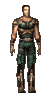

Etchoo
Leet
 Registered: Feb 2002
Posts: 12 | Lvl 54 LFG (Outgrowing NW mines in Lush) I saw a post a while back about progression of places to go to group, and I cant find it now.
Anywhoo, I'm 54 and Im finding it hard to group at the NW mines because I'm not able to group with players because of levels now. Where should I head next?
Thanks for any input! I love grouping!!
Viva La Groupie!!! |
Paffy
Supa Leet
Registered: Nov 2001
Posts: 241 | Next step is Pleasant Meadows aka 20k.
There you find Eye mutants first, then prolly Virus Builders and Shades or NPC camps and finally Bothackers (although at that time you would already do better exp from missions).
There you will spend your next 10-30 levels and then its missions all the way to 200... unless FC really speeds up their plan to bring back the outdoor hunting again.
Before certain nerfs, you would have gone to EFP Medusas most likely, which is no longer an option.
Zarch and da chars |
Etchoo
Leet
Registered: Feb 2002
Posts: 12 | Thanks for the info. Will head out there next.
Sounds a bit discouraging about having to mission the rest of the way after that though. Sounds REAL discouraging. |
Saiban-
Eleet
 Registered: Jun 2002
Posts: 28 | Still can goto EFP, but will get ganked maybe by clanners 
After 20k Its missions! w00t you do 20k mission for around 30-50 lvls, then you do BS missions! its fun really! just see the same walls, the same mobs, the same every thing! w00t! |


 Anarchy Online Bulletin Board > Game-Play > Game Mechanics > Lvl 54 LFG (Outgrowing NW mines in Lush)
Anarchy Online Bulletin Board > Game-Play > Game Mechanics > Lvl 54 LFG (Outgrowing NW mines in Lush) Last Thread Next Thread
Last Thread Next Thread 
 July 1st, 2002 09:00
July 1st, 2002 09:00